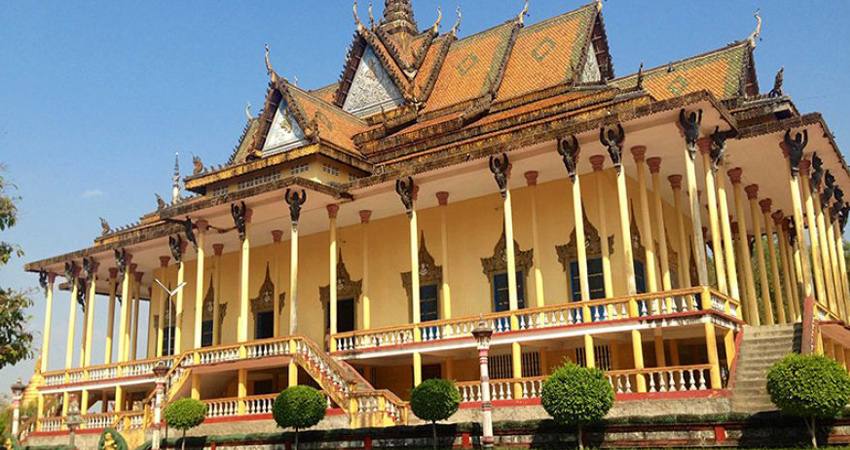
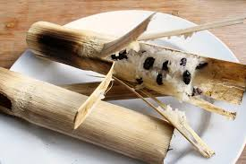

This small town was relatively remote but brought to fame by the almost extinct Mekong River dolphins. The best spot to watch the dolphins is at the Kampi village, 15 km north from town. Dolphin watching is a very popular activity. It is estimated that there are less than 80 dolphins left and the best time to see them frolicking, sometimes in large groups, is in the late afternoon.
In Kratie, visit the 100-pillar pagoda, known locally as Wat Sorsor Muoy Roy, located an hour drive from the town center of Kratie off the road to Stung Treng Province. This site has great historical relevance; this being the site that once stood an Eighth Century Royal Palace.
About 100 years later, the temple was damaged by lightening. Many of its columns were burnt down and the statues defaced. The temple was then pulled down and rebuilt by the local people. In 1987, the 100-column pagoda was once again renovated to its present state. A few of the original pillars can still be seen stacked up along the side.
The original structure of the ancient pagoda Sorsor Muoy Roy no longer exists; the present pagoda is a reconstructed modern temple. Although far from the original temple in size and stature, the present 100 pillar pagoda still attracts many devotees and tourists alike.
Kralan, a Cambodian snack made from glutinous rice and bean mixed with coconut milk and stuffed into bamboo tubes to be grilled over charcoal fire. This is a Kratie province specialty; must try.
 